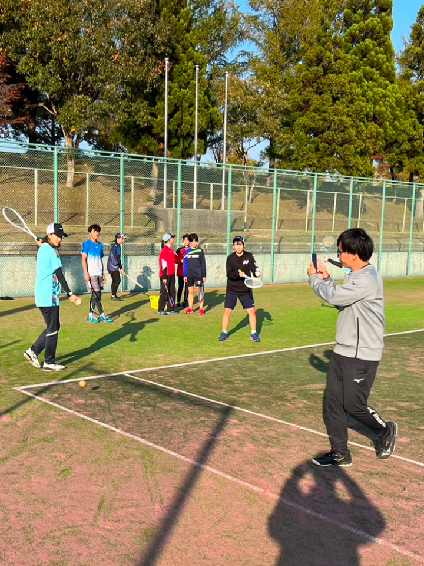
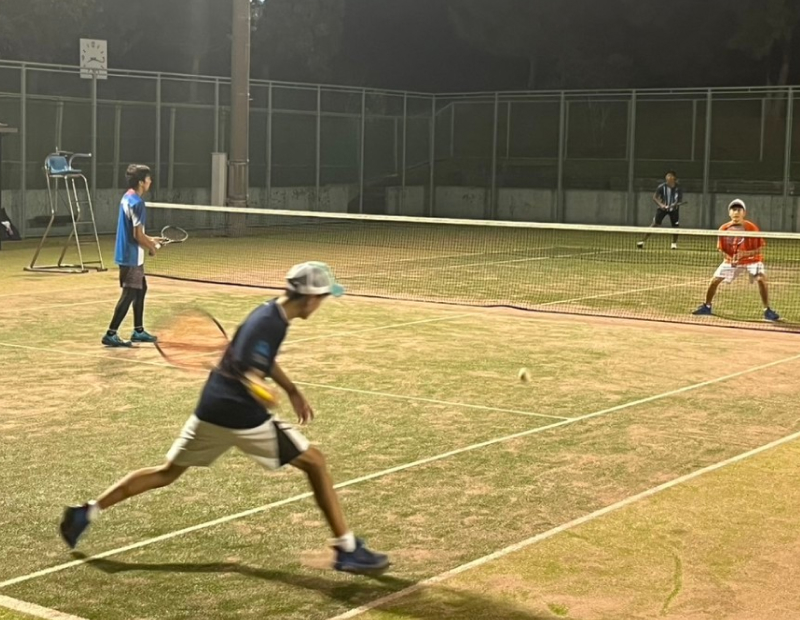

お知らせ
Information
A.star.Sとは？
秋田県秋田市を拠点に活動をしている、中学生を対象としたソフトテニスクラブです。
私たちは、クラブ内から県選抜に選ばれる選手を輩出することを目標に掲げ、日々の練習に励んでいます。
さらに、ソフトテニスを通して、挨拶などの礼儀を学び、心と体を成長させつつ、人々とのつながりを大切にし、地域づくりに貢献できるチームを目指しています。
夢を追いかける仲間が
ここにいます。
新規加入ご希望の方へ
Membership
A.Star.Sでは、一緒にソフトテニスをプレイしてくれる中学生の仲間を募集しています。
加入に関して詳しく知りたい方は下のリンク先から詳細をご確認ください。

